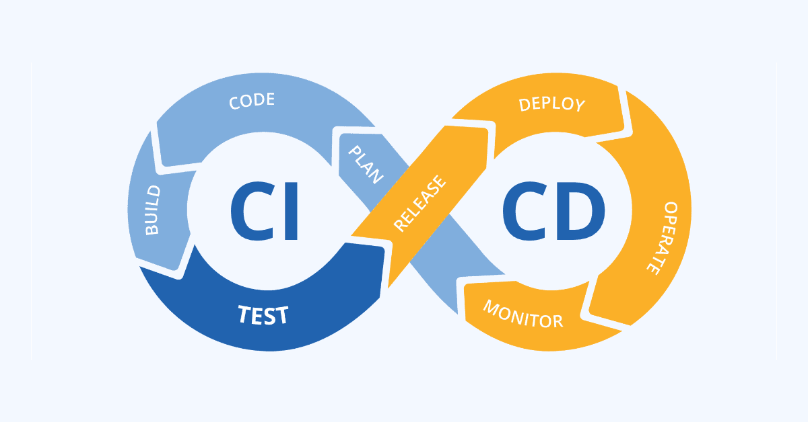
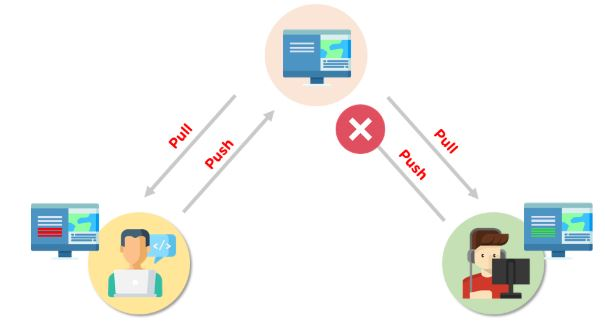
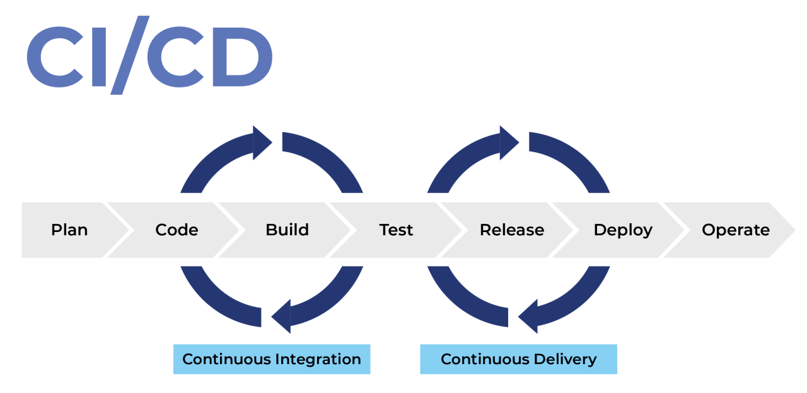
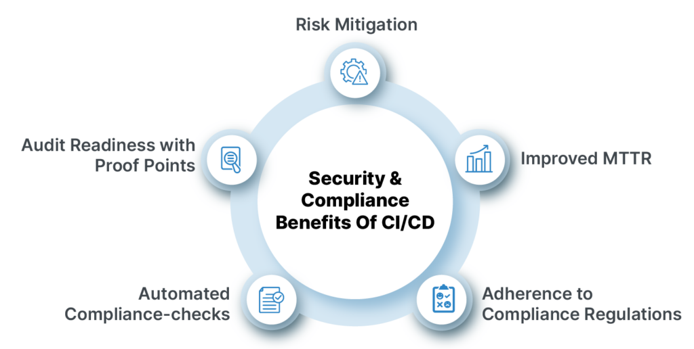

CI/CD
CI/CD aims to streamline and accelerate the software development lifecycle. It`s a methodology that automates the processes of building, testing, and deploying software.
Why its`s important?
The core objective of CI/CD is to minimize errors and speed up the delivery pipeline.
Continuous integration (CI) refers to the practice of automatically and frequently integrating code changes into a shared source code repository. Continuous delivery and/or deployment (CD) is a 2 part process that refers to the integration, testing, and delivery of code changes.

What is continuous integration?
The "CI" in CI/CD always refers to continuous integration, an automation process for developers that facilitates more frequent merging of code changes back to a shared branch, or “trunk.”
What is CD?
The "CD" in CI/CD refers to continuous delivery and/or continuous deployment, which are related concepts that sometimes get used interchangeably. Both are about automating further stages of the pipeline, but they’re sometimes used separately to illustrate just how much automation is happening.
Continuous Delivery
Continuous Delivery means that the code is always ready for release. After passing automated tests, the code is prepared for production, but the deployment itself is a manual step. The team can decide when to release the update, ensuring that the code is stable and deployable at any time.
Continuous Deployment
Continuous Deployment, on the other hand, takes it a step further. In this process, the code is automatically deployed to production immediately after it passes all tests.
How does CI/CD Pipeline work?
A pipeline in the context of software development, particularly in CI/CD (Continuous Integration/Continuous Deployment), refers to an automated sequence of processes that code undergoes from development to production.
CI/CD security
CI/CD security is used to safeguard code pipelines with automated checks and testing to prevent vulnerabilities in software delivery.
What are some common CI/CD tools?
Jenkins

designed to handle anything from a simple CI server to a complete CD hub
Spinnaker
a CD platform built for multicloud environments.
GoCD
a CI/CD server with an emphasis on modeling and visualization.
Concourse
an open-source continuous thing-doer.
Screwdriver
a build platform designed for CD.
Conclusion
In conclusion, CI/CD has become a standard in modern software development, enabling teams to release high-quality software faster and more reliably.